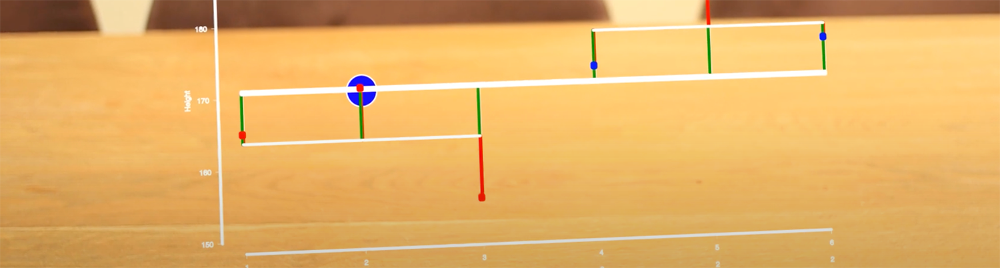
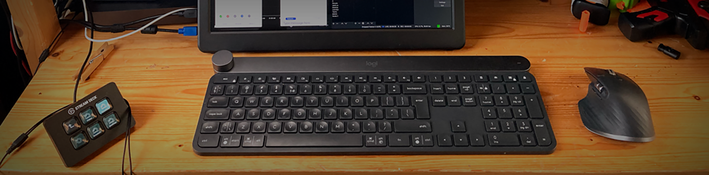
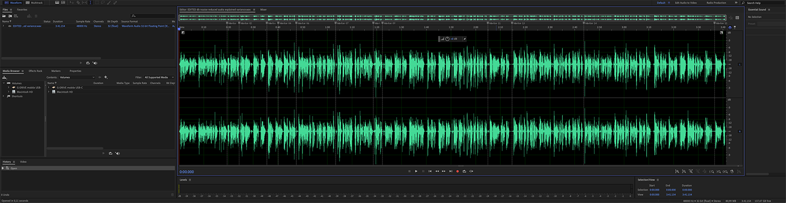
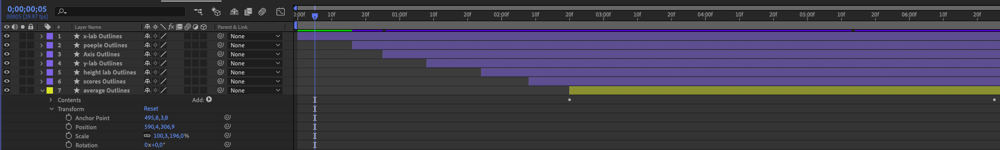
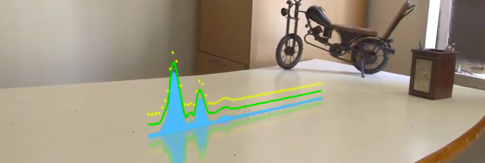

Klinkenberg
Research
Talks
Fun
Blogs
Projects
Blog Posts

3D tracked!
Do you remember that grassroots project I started back in 2019? Well, after months of COVID crisis management and online teaching, I finally came around to finishing the…
Jan 19, 2021
Klinkenberg

Live Online Lecturing
I have been teaching a large scale course amidst the pandemic. In this post, I want to share my experiences with live lecturing online.
Jan 10, 2021
Klinkenberg
My Online Lecture Setup
Strap in there, because this is going to be a deep dive. In a previous blog post, I already described how you could use open broadcast software (OBS) to overly a logo or…
Aug 16, 2020
Klinkenberg
Back to the Mac
Remember that time I switched to windows? Well, after less than half a year, I already caved. Though I really tried to make this relationship work, in the end, there was…
Jul 24, 2020
Klinkenberg
Presentation Overlay
So, the webinar on distance assessment was received quite well. Apart from the 200 attendees and now almost a hundred views on YouTube, I also received many questions on how…
Apr 20, 2020
Klinkenberg

Timing is everything
As mentioned in my previous grassroots blog, creating the animation I wanted for my 3D tracking video wasn’t that hard. This time I decided to follow my own advice and write…
Mar 11, 2020
Klinkenberg
I switched to windows!
#OMG it really happened. I switched to windows. After some twenty years of personal Mac use, I decided to switch. Now I’m not a complete noob to windows. I had my fair share…
Dec 28, 2019
Klinkenberg

Not 3D tracking yet
So, it’s taken some time before I could really start this grassroot project, but I finally got the ball rolling. Looking at my own plan in my previous post I immediately…
Dec 6, 2019
Klinkenberg

3D tracked knowledge video
It’s that time of the year again. The grass is turning green and so, it’s time for a new grassroots project. This time I’m going to dive into the world of 3D tracking in…
Mar 20, 2019
Klinkenberg
VR is so last year
So, we’re done with VR for lecture recordings. Why? We just can’t see the presentation, let alone the laser pointer. VR is out. Enter the next generation of presenter tools…
Mar 27, 2017
Klinkenberg
No matching items